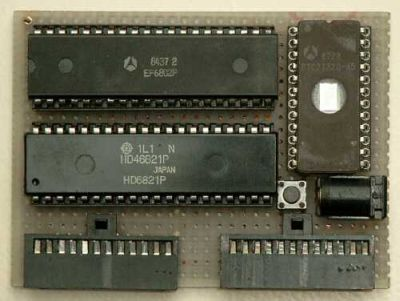

A weblog focused on interesting circuits, ideas, schematics and other information about microelectronics and microcontrollers.
E-books
Disclaimer
Because I have not tested all electronic circuits mentioned on this pages, I cannot attest to their accuracy; therefore, I do not provide a warranty of any kind and cannot be held responsible in any manner.
computer
Morpheus - Propeller-based multicore single board computer
1. November 2009 - 18:19 — adminIf you are interested in the amazing Parallax Propeller chip, you appreciate the Morpheus: A dual processor Propeller based single board computer.

6802 nano computer
19. October 2009 - 21:38 — admin
A really simple computer based on Motorola 6802 microprocessor.

m64
7. June 2009 - 11:20 — adminA small computer, based on ATMega162, built by C64 lover Andre Klonz.

Parallax Propeller based laptop computer
24. February 2009 - 21:45 — adminI've really dilema if this amazing construction post under 6502 or under Parallaxis. So decide yourself: This is a Propeller laptop with a 6502 co-processor and 64K of static RAM!
Text video display for 8bit computer
31. January 2009 - 15:33 — adminA simple and handy 40x25 monochrome text display you can attach to your 8bit computer (based on Z80, 6502 etc.) as I/O device with parallel data bus.
P112
22. January 2009 - 18:16 — adminAn older "homebrew" computer based on Zilog Z80182 (upgraded Z180) for inspiration.
ZX Spectrum hardware
29. December 2008 - 17:10 — adminA book about the ULA chip and other hardware information.
Z80 Microcomputer
18. December 2008 - 23:04 — adminThis is an actual computer, built completely from scratch. I began the project in the spring of 2006, while I was taking a course on microcomputers. My Z80 system will remain a work in progress as long as I can think of new things to add to it.